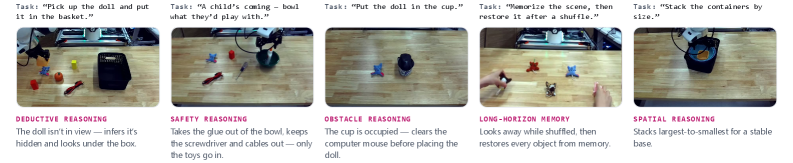
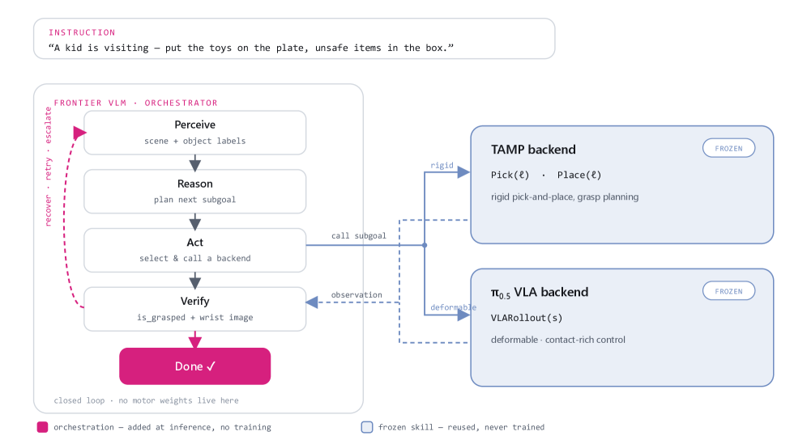

제출: 2026년 7월 23일 · Franka Research 3 + Robotiq · dual Zed-2i + wrist Zed-Mini · Claude Opus 4.7 주 reasoner
한 줄 요약 (TL;DR)
일반화 로봇에는 "동작"과 "판단" 사이 orchestration gap이 있다. 파인튜닝 대신 frontier VLM을 closed-loop 오케스트레이터로 두고, 두 개의 frozen motor 백엔드(π0.5-DROID 정책 · TAMP TiPToP)를 tool처럼 호출한다. 훈련·데이터 추가 없이 LIBERO-PRO 6-suite 평균 12.8% → 53.3%(π0.5 대비 4×), 실로봇 30 태스크 평균 16.7% → 97.3%. 최근접 오류 탐지 + retry/escalate로 150 trial 중 총 4 실패.
1배경 · 문제의식
frozen 모터 정책(VLA, TAMP)은 각각 잘하는 태스크가 있지만, "왜 여기부터 시작해야 하는지"·"실패 시 무엇을 다시 볼지"·"장애물이 있으면 무엇을 먼저 치울지" 같은 고수준 의사결정에는 약하다. 이 격차가 orchestration gap: 같은 motor skill이 agentic loop 안에 놓이면 얼마나 더 잘하는가. 저자들은 이를 정책 자체를 학습하는 대신 frontier VLM 오케스트레이터로 메우자고 주장한다.
2핵심 Contribution
Pigey: closed-loop 물리적 에이전시 오케스트레이터 — VLM ϕ가 관측→도구 호출→결과 반영→재계획 루프를 돌리며, 두 frozen 모터 백엔드를 tool로 사용. 어느 백엔드도 fine-tune·재학습하지 않음.
5 개 tool의 최소 도구 집합 — Perceive, Pick(label), DropAbove(label), VLARollout(subgoal), Done. TAMP·VLA를 각각 상황에 맞게 호출.
Verify · Retry · Escalate — 실패 시 재-perceive → 같은 도구 1회 retry → 다른 백엔드로 escalate. TAMP↔VLA bidirectional fallback.
Replan or Done — 실패면 재도전·escalate, 성공이고 태스크 완결이면 종료.
Verify · Retry · Escalate
매 Pick 이전에 re-perceive로 물체 이동 반영.
실패한 Pick은 1회 retry → 2회째 실패면 VLA로 escalate.
목표 위치가 다른 물체로 점유되면 먼저 clear.
TAMP ↔ VLA 양방향 fallback.
VLM 오케스트레이터 스윕 (Table 15)
Claude Opus 4.7 (실로봇 주 reasoner) · Sonnet 4.6 · Haiku 4.5
Gemini 3.1 Pro · 3.5 Flash · Gemini Robotics-ER 1.6
GPT-5.5 (여러 tier)
평균 성공률은 reasoner 능력에 따라 44.3% → 53.3%로 점진 상승 (LIBERO-PRO).
4실험 결과
LIBERO-PRO 6-suite (평균 500 trial)
Suite
π0.5-LIBERO
Pigey
Object swap
17%
54%
Object task
1%
54%
Spatial swap
20%
66%
Spatial task
1%
80%
Goal swap
38%
44%
Goal task
0%
22%
Mean
12.8%
53.3%
태스크 특화 파인튜닝 없이 4× 이상 개선.
실로봇 (Franka Research 3, 30 태스크 × 5 trial)
카테고리
π0.5-DROID
TiPToP
Pigey
Pick-place control
95%
80%
100%
World knowledge
0%
90%
100%
Conditional logic
0%
95%
100%
Multi-step reasoning
0%
25%
100%
Spatial reasoning
20%
75%
100%
Obstacle reasoning
0%
0%
90%
Error recovery
10%
0%
90%
Long-horizon memory
0%
0%
100%
Overall
16.7%
48.7%
97.3%
실패 분석 (Table 14)
150 trial 중 π0.5: 86 실패(주로 grounding), TiPToP: 65 실패(주로 planning), Pigey: 총 4 실패(grasp 실행 · verifier false-success에 균등 분포).
5Ablation / 관찰
Frozen 모터로도 파인튜닝-수준을 넘음 — 정책 자체를 개선하는 대신 오케스트레이션을 개선하는 것만으로 4×~5× 이득. 데이터·훈련 비용 없음.
Reasoner 스케일 vs 성공률 — Haiku 4.5부터 Opus 4.7까지 44.3→53.3%로 완만 상승. reasoning 품질이 중요하지만 폭발적 이득은 tool 설계에서 온다.
Bidirectional TAMP↔VLA fallback — 어느 백엔드도 단독으로는 부족(TiPToP obstacle 0%, π0.5 world knowledge 0%). Pigey가 상황별로 골라 부르는 것이 강력.
Verify가 곧 안정성 — verifier false-success가 Pigey의 유일한 신규 실패 원인. verify 품질이 다음 병목.
6핵심 Figure / Table

Figure 1 — Pigey가 열어주는 추론 행동. obstacle reasoning(가려진 타깃을 인식·치우기), safety reasoning(위험 물체 제거), 점유된 목표 clear, long-horizon memory(재구성 복원), 안정을 위한 spatial stacking. 모두 frozen VLA·TAMP + VLM orchestrator만으로 달성. (출처: arXiv:2607.21725)

Figure 2 — Pigey 시스템 개요. Frontier VLM 오케스트레이터가 5 개 tool(Perceive/Pick/DropAbove/VLARollout/Done)을 호출하며, π0.5-DROID(VLA)와 TiPToP(TAMP) 두 frozen 백엔드를 상황에 맞게 스위칭. verify → retry → escalate 순환. (출처: arXiv:2607.21725)
왜 중요한가 — 최근 하드코딩 파이프라인(PhyAgentOS 등)이나 계층형 VLA(τ0-VLA 등)와 대비되는 "파인튜닝 없이 VLM으로 오케스트레이션만" 접근이 실전 태스크에서 near-100% 성능을 낸다는 실증. 오케스트레이션 자체가 대규모 사전학습이 아직 못 채운 gap이라는 강한 신호.